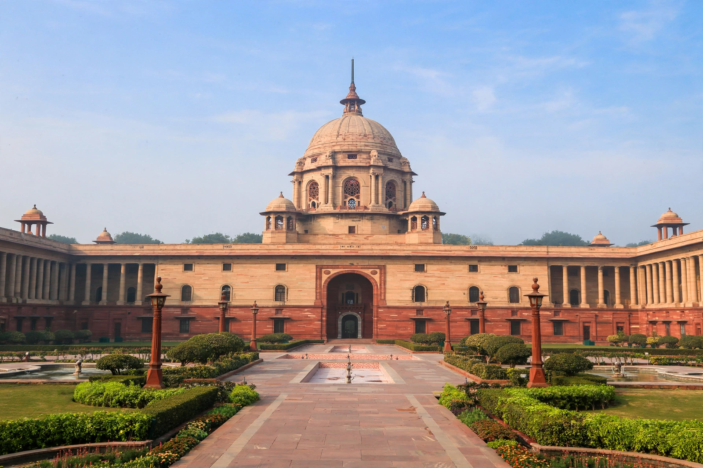

President of India

The President of India is the head of state of the Republic of India. The president is the nominal head of the executive, the first citizen of the country, and the supreme commander of the Indian Armed Forces. Droupadi Murmu is the 15th and current president, having taken office on 25 July 2022. She is the first person belonging to a tribal community and the second woman to hold the office.
The office was created when India became a republic on 26 January 1950, when the Constitution of India came into force. The president is indirectly elected by an electoral college comprising the elected members of both houses of Parliament and of the legislative assemblies of the states and union territories with legislatures.
| Incumbent | Droupadi Murmu (since 25 July 2022) |
|---|---|
| Style | Honourable President; Rashtrapati Mahodaya |
| Residence | Rashtrapati Bhavan, New Delhi |
| Appointer | Electoral College of India |
| Term length | Five years, renewable |
| Inaugural holder | Rajendra Prasad (1950–1962) |
| Formation | 26 January 1950 |
| Salary | ₹5 lakh (US$6,000) per month |
Election and term
The president is elected by an electoral college consisting of the elected members of both houses of Parliament (the Lok Sabha and the Rajya Sabha) and the elected members of the legislative assemblies of the states and the union territories of Delhi, Jammu and Kashmir, and Puducherry. The election is held by proportional representation through the single transferable vote, and voting is by secret ballot.
The president holds office for a term of five years from the date on which they enter office. They are eligible for re-election; Rajendra Prasad, the first president, remains the only person to have served two full terms. The president may resign by writing to the Vice President of India, and may be removed from office by impeachment for violation of the Constitution under Article 61.
Powers and duties
Under the Constitution, the executive power of the Union is vested in the president, but in practice it is exercised by the Council of Ministers headed by the Prime Minister, whose advice the president is generally bound to follow after the 42nd and 44th Amendments. The president appoints the prime minister, other ministers, state governors, judges of the Supreme Court and High Courts, and other constitutional functionaries.
The president summons and prorogues Parliament, addresses both houses, and gives assent to bills; a bill passed by Parliament becomes law only after presidential assent. The president may promulgate ordinances when Parliament is not in session, grant pardons and reprieves under Article 72, and proclaim a state of emergency under Articles 352, 356 and 360. The proclamation of the Emergency of 1975–1977 remains the most controversial use of these powers.
Residence and succession
The official residence is Rashtrapati Bhavan, a 340-room palace on Raisina Hill in New Delhi, originally built as the Viceroy's House during British rule. The president also has retreat residences at Shimla and Hyderabad. In the event of a vacancy, the vice president acts as president until a new president is elected; the Chief Justice of India acts in the role if the vice president's office is also vacant, as happened in 1969 when Mohammad Hidayatullah acted as president.
List of presidents
Fifteen individuals have held the office, beginning with Rajendra Prasad (1950–1962) and including Sarvepalli Radhakrishnan, Zakir Husain, V. V. Giri, Fakhruddin Ali Ahmed, Neelam Sanjiva Reddy, Giani Zail Singh, R. Venkataraman, Shankar Dayal Sharma, K. R. Narayanan, A. P. J. Abdul Kalam, Pratibha Patil, Pranab Mukherjee, Ram Nath Kovind and Droupadi Murmu.